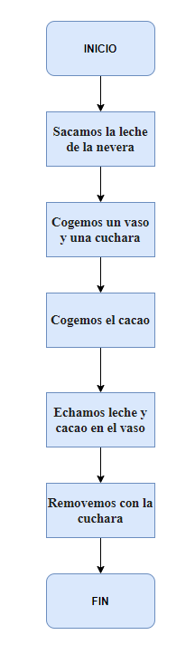

Recicla con Scratch
1. ¿Qué se recicla?
¿Qué se recicla?
Reciclar es dar una nueva vida a los envases, reduciendo el consumo de recursos y la degradación del planeta. Sin embargo, para poder obtener todos los beneficios del reciclaje, es necesario hacerlo bien.
Debemos conocer qué se puede reciclar y qué no para separar correctamente. Aquí te detallamos los materiales reciclables más comunes de nuestro día a día.
1.1 Color de contenendor
Rellenar huecos con las palabras que falta
Tarea
Nombra todo lo que se puede reciclar e indica en que contenedor se tiene que depositar
1.2 Otros residuos
Otros residuos
Hay otros muchos productos y residuos que también se pueden reciclar gracias a los puntos limpios, por ejemplo, estos:
Electrodomésticos
Aparatos electrónicos
Bombillas
Aceites usados
Muebles
La ropa también es reciclable, simplemente tienes que llevarla a los puntos habilitados para ello.
1.3 ¿Tienes alguna duda de reciclaje?
¿Tienes alguna duda de reciclaje?
Si necesitas más información sobre cada uno de los envases y productos detallados anteriormente o tienes alguna duda de reciclaje concreta, consulta nuestra web Dudas de reciclaje. En ella hablamos de cada uno de los diferentes materiales y te damos consejos sobre su reutilización y reciclaje.
Además, recuerda que cuentas con AIRE, el Asistente Inteligente de Reciclaje de Ecoembes, para resolver fácil y rápidamente cualquier duda que tengas. Seguro que ya se te está ocurriendo alguna... ¡Pregúntale!
2.Introducción a la programación
Introducción a las programación
Según la RAE: Programación: Elaborar programas para la resolución de problemas mediante ordenadores-
Una definición informal pero más explicativa de Programación: Proporcionar a un ordenador un conjunto de
datos y unas instrucciones sobre lo que se debe hacer con esos datos con el objetivo de resolver algún problema.
Objetivo: Resolver un Problema
Cómo resolverlo: Utilizando un algoritmo y los datos del problema.
– Un algoritmo es:
• Un conjunto de instrucciones que en una determinada secuencia permite la resolución de un problema paso a
paso.
• Una lista bien definida, ordenada y finita de operaciones que permite hallar la solución a un problema.
– Los datos son los propios del problema y serán manejados por el algoritmo
2.1 Diagrama de flujo
¿Cómo hacer un diagrama de flujo ?
Ejemplo de diagrama de flujo
Hacer el diagrama de flujo de un vaso de leche con colacao

Tarea de un digrama de flujo
Hacer un diagrama de flujo de un hombre cuando va a tirar la basura. ¿Qué contenedor tiene que tirar la basura que lleva ?. Imaginar por lo menos 5 posibilidades. Es decir, por ejemplo la posibilidad de que ese hombre lleve aceite usado , otra posibilidad sería que lleve cartón y cristal,,,,Asi teneis que pensar en 5 posibilidades . El ejercicio se tiene que hacer en la herramienta Libre office Draw.
2.2 Sentencias básicas
¿Que son sentencias básicas?
Conjunto de instrucciones que se ejecutarán repetidamente. Condición de terminación del ciclo: La evaluación de esta condición determinará la finalización del ciclo.
2.3 Programación por bloques
¿Qué es la programación por bloques?
La reacción más habitual cuando alguien se entera de que tiene que aprender programación es echarse las manos a la cabeza. ¿Cómo voy a enseñar programación sin tener ni idea? Pero hoy en día, gracias a la informática, tenemos a nuestra disposición numerosas aplicaciones y páginas web con las que podemos aprender y enseñar a programar sin tener que llegar a ser un fiera de la informática.
A la hora de introducir a los niños y niñas en el mundo de la programación, es importante que la perciban como una actividad motivadora e interesante. Para ello, existen diferentes plataformas y aplicaciones con las que introducir los conceptos básicos de programación de una forma muy visual e intuitiva.
La metodología por bloques es ideal para la iniciación a la programación de los niños y niñas. Los bloques de programación son grupos de códigos ordenados de una manera lógica y determinada cuyos valores o funciones pueden modificarse y unirse entre sí. De esta manera, se crea una secuencia lógica que conforma un movimiento o una acción determinada.
3.Scratch
Tarea cuentame que sabes de Scratch
- Duración:
- 00:30
- Agrupamiento:
- 30
Dime todo los que sabes de la programación en Scratch.
3.1¿Qué es Scratch?
Scratch
Una herramienta intuitiva, cómoda y visual que permite trabajar la programación por bloques como si fueran piezas de un puzzle que se traducen en lenguaje de programación.
Entorno de Scratch
3.1.1 Bloques en Scratch
Bloques
Los bloques de Scratch están organizados dentro de diez categorías de códigos de color: Movimiento, Apariencia, Sonido,
Lápiz, Datos, Eventos, Control, Sensores, Operadores y Más bloques.
3. 2 Ejemplo de scratch para reciclar
Ejemplo
Este es un ejemplo de como tiene que quedar vuestro programa de Scratch para reciclar.
4.Autoria y licencias
Autoria
María del Carmen Esteban Díaz
Licencia
"Creative Commons”.
5.Descargar en un fichero
Descargar el fichero fuente
| Título | Recicla con Scratch |
|---|---|
| Descripción | Comprender la importancia de saber reciclar, con el programa Scratch |
| Autoría | Carmen Esteban Diaz |
| Licencia | Creative Commons BY-SA 4.0 |
Este contenido fue creado con eXeLearning, el editor libre y de fuente abierta diseñado para crear recursos educativos.
Obra publicada con Licencia Creative Commons Reconocimiento Compartir igual 4.0